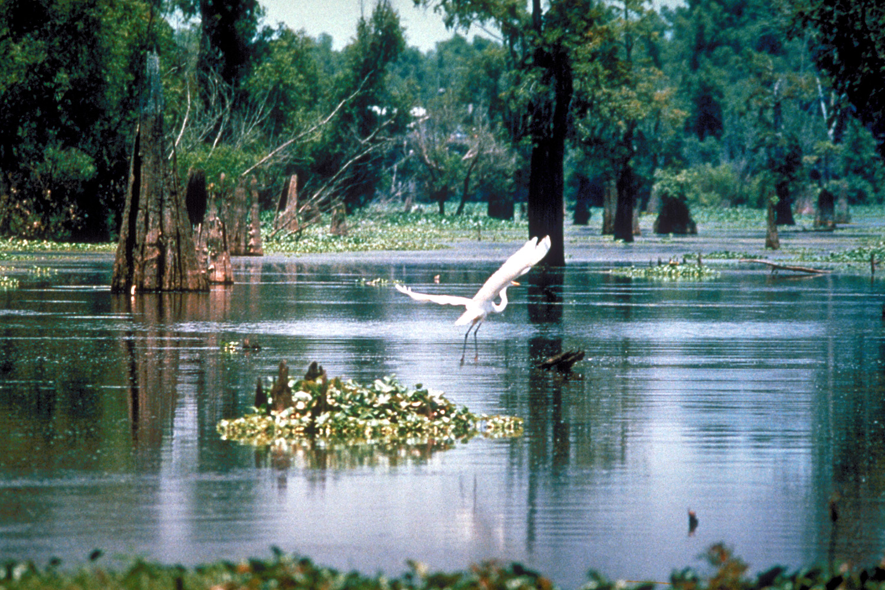

第 5 章
沼泽里的帝国
他的照片是从泥里取出来的。信封上沾着沼泽地的细泥，边角发软，像在水里浸过又阴干的样子。他撕开封口时，底片滑出来，缠在一起，有一小段被水汽泡皱了，胶膜鼓起。他把底片在暗房灯下展开，用

路易斯安那州阿查法拉亚盆地沼泽景观
图源：维基共享资源 · U.S. Army Corps of Engineers, photographer not specified or unknown · Public domain
夹子夹住，悬在通风线上一段一段地看。暗房很小，是从路易斯安那州立大学湿地研究站卫生间改出来的，原来的小便池还在墙角，用一块灰布盖着。显影液的酸味和陈旧的氨水味混在一起，他早就闻不出来了。
他本来要找的是白尾鹿。那张底片上一开始看不出东西。灰的，深的，几根斜线，一片模糊的浅色，像曝光不足。他又加了几秒显影液，凑近看，忽然意识到那些斜线是一大片草叶，浅色是一团反着光的灌丛，灌丛前站着一头动物，几乎和黑暗融为一体。它是黑的。不是纯黑，是泥黑，毛上结着湿泥，能看清的只有一排脊背的硬毛，从各个角度竖起来，像被风吹过的草茬子。它没有鹿的纤长，没有鹿的俊俏，它短，厚，俯着身子，嘴筒子扎在泥里，上半身和下半身之间有某种塌下来的重量。他看底片时没有叫出声。据他后来给学生说起，他当时只是把底片凑到灯下，看了很久，然后说了一句：“这不是鹿。”
路易斯安那州的沿海沼泽，地图上看起来是一片实心的绿，细看却全是线。公路是线，田埂是线，灌溉渠是线，铁路在东北角切过，也是线。线之间是水面、泥岸、草滩、水稻田和几片落了叶的落羽杉。那些线不是画上去的，它们是人用推土机和挖泥船在地表留下来的凹痕，水找不到旧路，只能顺着凹痕走。1974年，这块地方已经不再像古人看见时那样每年按时漫水了。水被管束起来，装进渠里，像无数条被钉住的灰蛇。
那个从暗房里走出来的年轻人叫科尔曼·里德。这个名字和他的身份，以及他后来写下的那些笔记，是本章得以成立的唯一依据。他不是先驱，也不是英雄。他是路易斯安那州自然资源部野生动物处的一名三级技术员，层级倒二，年薪一万零三百美元。他开的是一辆州政府配发的浅蓝色雪佛兰，车门上印着灰色的部门徽章，泥点溅上来不容易看出来。他的工作是应土地所有者和狩猎俱乐部的请求，去沼泽地评估白尾鹿的种群状况，给出每年允许猎杀数量的建议。他本来不研究猪。
猪在这些材料里出现，往往只是一句附注，是鹿的陪衬。他的笔记不是日记。它是一套技术记录，用浅蓝色的横线纸写成，封面印着“州自然资源部·野生动物处”的字样。笔记里夹着一些照片、一些地图、几封短信，还有几张被泥水打湿过的明信片。这些材料后来被人们在整理档案时才翻出来，订成两册。第一册从1974年1月到1977年12月，第二册从1978年1月到1983年9月。两册之间有一些日子断了。断掉的那几天，他可能没有下地，也可能去了，但没有写。没有人知道他为什么写这些。记录本身没有宣言，字迹从开始的整齐变得越往后越潦草，页边上有一些数字、一些箭头、一些画出来的猪蹄印和耳形。
他第一次认真写猪是在1975年9月的一页。那时他已经连续几次在野外遇见猪群了。在达勒姆湖附近的一片硬木林边缘，他带着望远镜正准备清点鹿，一头公猪从无患子丛中钻出来，肩胛骨高过头顶的树干分叉。它没有跑，站在原地看他，嘴巴半张，泥水从唇边滴下来。他写下了日期和地点，然后写了一句：“与牛犊大小相仿，可能来自上游农场。”
“可能”。这个词在他的笔记里出现了很多次。那时还没有人把这些猪叫做“野猪”，至少在路易斯安那州的公文里没有。官方说法是“自由放养的家猪”，属于“家畜失管问题”。野生动物处不管家畜。农业部门也不管在野地里乱跑的猪，因为它们不被视为经济资产，除非有人在猪身上打过耳标、能证明所有权。农业部门管的是猪瘟、口蹄疫、猪肉检验。没有人管一群在沼泽和硬木林里不隶属于任何一家的猪。它们在法律上悬空，在地上却踏实得很。
里德对猪认识不多。他读过的教科书里关于猪的部分，只有两段，一段讲猪的繁殖周期，一段讲猪痘。他知道的猪是从实验室和屠宰场里来的家猪，知道它们的肉，不知道它们的生活。真正让他焦躁的是鹿。1975年的白尾鹿数量比上年又降了一些，狩猎俱乐部的人很焦虑，电话打到处里，让他去解释原因。他去了，拿着测量尺、地图和一堆表格，在泥里走了一整天，数到几堆鹿粪和几处新鲜足迹，却没法说明白为什么鹿越来越少。这一天开始，他的记录里出现了“疑与猪有关”的字样。
起初只是怀疑。猪会拱食鹿的补饲玉米，猪会占据鹿道，猪会毁掉鹿最爱的几片低矮灌丛。这些是直觉，不是有证据支持的判断。
里德在页边写：“猪群通过后的地面，犹如被小型犁翻过一遍。”又写：“鹿不在此处停留。”他没说“因为猪。”他写的是“鹿不在此处停留。见下一页。”
下一页是一张画得很简陋的示意图，几个圈表示树，几条波浪线表示猪拱过的地面，几串小点表示鹿的足迹，小点在圈外围消失了。
他把疑问留在纸上，没有急着下结论。这是一个人长期做野外记录养成的习惯，也可能纯粹是工作上的谨慎——你写出“猪赶走了鹿”这个判断，谁来给你签字？
处里没有人关心猪。猪不是保护物种，也不是狩猎物种。没有人会为猪开一次会，除非猪钻进了谁家的菜园。
1976年冬天，他在阿查法拉亚盆地北缘做调查时，第一次注意到一头猪的耳朵。那是一头母猪，带着七头幼崽，从浅水处慢慢走过去，走向一片被排水渠隔开的黑柳林。他挂在树上的相机拍到了它。照片在底片上呈暗灰色，他把照片洗出来后，用放大镜仔细看那头母猪。它的左耳有一道凹口，形状像一个粗写的V，边缘很整齐，不是新伤，因为伤口处长出了毛。他翻出前几天拍的另一卷底片，找到了同一群猪在不同角度的照片。左耳凹口又在画面里出现，他确定那是同一只个体。他在这一页的底部写下：“F-001。左耳缺刻，V形。”又在下一页画了一幅耳廓示意图，把缺口标在左耳上缘偏中位置，旁边注明：“逐年记录其出现的产仔群与时间。”
“F”是“Feral”（野化的、未驯的）的缩写。他用这个字母给自己定了一套标记方法，F-001是头一个。后来陆续有F-002、F-003，一直到F-111，以耳形、毛色、体型做区分。F-001是唯一一只有明确耳缺的，所以他记得最牢，也出现得最频繁。每当一头带仔的母猪走过，他都要费力地对耳形，看牙口，有时从泥地上找到几根刚掉下的毛，就夹在一页纸里。纸页上粘的毛是浅白色的，带一点褐。那是F-001在生育高峰时掉下的毛，还是别的猪？他在页边打了问号。不是所有事都能在泥地里弄明白。
他的数字却越写越精。1976年2月，F-001出现，带七头幼崽。同年10月，F-001再次出现，身边只剩五头。1977年1月，F-001带着四头更大的幼崽穿过同一片树丛。1977年秋，F-001身旁是六头新下的仔猪。1978年3月，他再次发现它时，它又带着八头。仔猪小腿细得像柴棒，在母体后面排成一条线。他把这些观测记成了一张表，列名“F-001·年产仔群次数”。表中列出日期、地点、仔猪数量、估计周龄。地点一项写得模糊，只写“东北角黑柳林”、“西侧旧堤”、“猎人路南”之类。因为他怕猎队的人看了笔记去找它。他保护的其实不是猪，而是自己的监测对象——他知道，一旦有人听说哪里有一头固定出现的母猪，枪口马上就会跟过去。
狩猎俱乐部里的人对鹿正在减少这件事不以为然，但对猪“到处都是”却很有兴致。猪好打，猪不贵，猪不用请人上山导猎，也不受猎季限制。当时路易斯安那的野猪没有专门的猎季，也没有数量限制，想打多少打多少。没人觉得这是保护。打猪只是个消遣，是猎鹿淡季的一种补充，也许还能落点野味。
里德有一次从一个猎场看守的口中听到了一个账目：鹿一年只在秋冬季打，猪全年可打；鹿要建观察台、拉铁丝、种食源，猪自己到处都是；打一头鹿要付给俱乐部一大笔会员费，打猪只付很少的“服务费”，甚至有些地方不要钱，只要把打死的猪自己拉走。
里德在笔记侧栏写道：“猪比鹿更容易转化为可出售的猎获。”这句话他写得很轻，没有评论。
他并不关心猎场的经营，他关心的是：如果猪变得很“有用”，那就更难让人同意去清除它们。这是他从猎场看守闲聊里听来的常识。
野猪成了一种新的猎租，尽管这个词是很多年后才被人造出来的。在1970年代的路州，这还被叫做“猪也有客了”，或者“打猪不容易，但也有人来打。”
他并不反对打猎。他的同行里很多人自己是猎人。州野生动物处的经费也来自狩猎证和相关的联邦税收。猎人是他的服务对象，不是他的敌人。
可当猪变成猎场的替代收入时，他就觉得这事开始有点说不清。他关心的鹿还在减少，而猪似乎越来越多。可是如果大家都开始靠猪赚钱，那猪的问题还该不该解决？怎么解决？
他写不下结论，只在笔记里留下一句：“一旦某种动物成为一种租金，它就不容易被视为需要消灭的害物。”这句话写于1978年冬天。
当时他正站在一条新修排水渠旁边。水泥护坡还没完工，黄土堆在渠岸上，水从高处往低处流，把泥冲出很深的槽。他看见前一夜下过雨，渠坡上印着几十个新鲜的猪蹄印，一路从渠顶走到渠底，消失在浅水里。猪把排水渠当路来用。渠是干的，比泥地硬，比草地矮，比林子整齐。它从这片地一直通到那片地，中途没有倒木，没有水塘，没有猎人打的坑。人修给水走的路，猪也走。水走到哪儿，猪跟到哪儿。
这就是后来他在地图上画出来的东西。地图是那几年逐渐添上去的。第一张来自美国陆军工兵团公共信息办公室，标着“密西西比河下游防洪堤系统总览”，比例尺不大，整套系统含主堤、支堤、排水渠、泄洪道、泵站。画这幅图的人不关心野生动物，只是按工程项目来做，堤是粗蓝线，渠是细蓝线，泵站是一个个黑点。
里德把地图摊在办公室的旧木桌上，用铅笔轻轻勾。他先把1974年以来所有发现过猪群的点标出来，又标出鹿群的密度变化。然后他拿另一张透明纸蒙在地图上，只画渠和猪的分布。
两张纸对在一起时，猪的分布不是均匀的，不是哪里林子深哪里猪多，而是沿着渠线延伸，多数集中在渠堤与沟口附近，越远离渠道，猪的踪迹越少。
这是一张不发布的地图，内部打印，只有十份左右。里德用彩笔把高密度区涂成红，低密度区涂成黄，没有发现猪群的地方留白。图的西南角，有一片几乎全红，那里是稻米和玉米种植最密的地带，泵站也最多，渠网也最整齐。他没有在图上写“猪的统治区”之类的话，只写：“估算分布范围与排水系统有较强吻合。”
但他需要更多的证据，不能只靠几张照片和一张地图。于是他开始数巢。“巢”不完全是鸟的专属。母猪生产前会在隐蔽处用植物堆成一个浅窝。窝不精致，不过是把草压平，把泥拱成一个凹，有时铺一点枯叶。但只要找得到，就比较稳定。有人把它叫“猪窝”，他坚持叫“产仔巢”，因为这样才符合他的表格。
他找到过不少巢，多在渠堤缓坡上，离水不远，上面有很好的覆盖，比如悬铃木的老根、藤萝、半倒的橡树。也有在沼泽中间小丘上的。
那个小丘过去可能年年被水漫过，现在水漫不到了，因为上游的泵站把水抽到别处去了。土是干的，猪就住了下来。
他在一次水鸟调查时偶然发现了这个小丘，上去一看，有一片压平的芦苇，几堆被啃过的螺壳，蹄印从水边一直延伸向丘顶。小丘旁边是一道新修的隔水堤，把原来进入这片洼地的水流切断了。水没了，树没有立刻死，芦苇还站了两年。猪先到。
那年春天，他带了三个实习生来做一件极单调的工作：沿三十条样线，总计长度超过一百公里，记下所有畜道、脚印、粪便、取食痕迹和翻挖痕迹。样线大多是走出来的，有些地方根本不能走，要趟水，要爬渠坡。学生鞋子陷在泥里，骂得很凶。他们拿着计数器，按下一次算一个“活动指数”。数据带回来，他把它们标在网格图里，像做人口统计一样去做猪的研究。没有基础数据，他自己造出一套来。回头来看，那是笨办法，可当时没有别的办法。
这些调查让他得出了一个很刺眼的发现：在那些全年保持干燥的渠堤上，猪的密度远高于周围湿地的平均水平。一头母猪在渠堤上生产的间隔，可以短到一年两胎。他认识的一个农业实验站技术员说，这跟家猪的条件差不多了。里德没有反驳。他在笔记中写道：“水不再来，地在变干，猪就按照它们自己的方式填满它。”他把这称为“人类造成的环境变化对猪的利好”。他没有把它写成一篇完整论文，因为他主要的研究对象还是鹿。但这些材料像越积越高的水，迟早要漫过堤。
记录F-001的那几页，他每次翻过去都会停顿一下。不是感情，而是一个疑问。为什么同一头猪，能在这么长的时间里被反复记录到？如果这些猪一直在流动、在游荡，像处里一些人说的“到处乱窜的逃逸者”，那F-001不会年年在同一片区域出现。它会出现在完全不同的地方，或者干脆被人打死，消失在记录里。它没有。它回到同一片黑柳林，走过同一条渠坡，带着新一窝猪，回到那个年年有人抽水、年年有人种稻的区域。别的地方也许有更好的橡果，可它没有离开。这里好，这里的土合适，这里的水在合适的时候出现，又合适地退掉。人类用排水渠和堤坝创造了“更合适的沼泽”，而猪比鹿更早明白这一点。
里德在1979年春天写了那封给州自然资源部上级的报告。报告标题冗长，叫《阿查法拉亚盆地及邻近地区野猪分布与数量增长初步评估》。一共二十四页，附了七张照片、三张地图和十二页统计表。报告里的表述尽量“技术上稳妥”。他写道：“在缺少早期基准数据的情况下，无法确定绝对数量，但所有迹象均指向快速增长。”然后他写了一句最让后人记住的话：“目前所观察到的增长，可能并非由单一的逃逸事件解释，而是种群在栖息地中持续自我补充所致。”这句话换了说法，意思就是：它们不再仅仅是逃逸者，它们已经成为居民。
报告最后一页，他手写了三行字。不是结论，因为前三行已经写满了。他写的是：“种群年增长率估计37%。若此估计可靠，数量大约每两年翻一番。”下面一行是：“目前无任何州或联邦项目将其作为入侵物种种群控制对象。”再下一行写的是：“需要专门经费与长期调查。”他把报告装好，寄给处里、农业部、州害虫植物与病虫害控制办公室、两个土地所有者代表。地方法律不要求把猪列为入侵种，他只能把它寄出去，等待有人回信。
回信来得没有他想象的慢。州自然资源部给他回了一张内部批示，上面盖着“已阅，存档”的戳，底部有主管的签名缩写。农业部门的回信礼貌地说明他们无权处理未确认所有权的生猪，建议他联系地方动物管制机构。两个土地所有者没回信。有一封被退回来了，因为地址错了一个字母。后来他才知道，那个土地所有者早把地卖掉，新主人住在外州，是几家农业公司的代理人。
“已阅，存档”这个戳，他在报告副本上看了很久。这个戳意味着他没有被驳回，也意味着没有下一步。他曾以为一个生物学家的工作就是把野外数据送到桌子上去，推着桌子让事情发生。他现在知道，桌子后面还有桌子，很多桌子，一层一层的，各有各的权限。在1979年的路易斯安那，野猪是一件事，不是一类事。政府里没有一个盒子里装它们。你可以找到管鹿的盒子、管火鸡的盒子、管水禽的盒子、管熊的盒子，甚至管蝙蝠的盒子。猪没有盒子。
可地上的帝国不会等政府找盒子。1979年夏天，他在一次航拍图的核对中看到，稻田边缘被吃成了一条弧形的断带，像谁拿刀把几个地块切掉了一角。
他骑车去看。田里有十几头猪，大的有二百磅，小的只有猫那么大，在稻田边翻泥。水稻正在灌浆，田埂上被拱出半尺深的坑。
一个农场主站在泵房边，用猎枪朝它们射击。枪响之后，猪跑了，人也走了。稻子没有复原。
他问农场主损失多大，农场主指了指东南边一块地：“那一块，去年收三车，今年能收一车就不错。”农场主不知道里德是生物学家还是查税的人，不耐烦地走开了。
里德在笔记里写：“被毁稻田约五英亩。农场主拒绝提供损失估计。”他回到办公室，找出州农业试验站发的农作物价格表。1979年的水稻，每英亩单产约三千磅，每百磅市价几块到十几块不等，按地区与等级计算。五英亩的损失，按一车稻谷的毛收入估，三五百美元。对一个小农场来说，这像抽走了一头小牛。
他没有把这个数字放进正式报告，因为对方没有确认损失。他在私人笔记里写：“若猪的密度继续上升，此类损失将不再是个案，而会成为区域问题。”
那片区域本来不应该是猪的乐园。阿查法拉亚盆地的一部分直到二十世纪中期还保持着漫水沼泽的样子。水夏天涨，秋天退，冬天出露一片又一片泥滩。
旱季的人去打猎、捕鱼、放猪。放养的猪在旱季长得很快，因为灰泥里什么都有：根茎、蠕虫、卵、落果、死的鱼。但到了次年春水一来，猪就得离开，否则会死在水里。于是家猪在沼泽边缘过着半野生的生活，随着水走，水进人退，水退猪进。
这个古老节奏在堤坝系统建成后被打断。泵站把水抽到主渠里，不让它漫进低洼地。以前的季节性淹没消失了，猪找到的不只是旱地走廊，还有一种从来没有过的稳定。这是整个南方湿地系统中反复出现的故事：人类用工程改造了土地的呼吸节奏，无意中为野猪的“帝国”拓展了前所未有的空间。
里德不是水利工程师，他没有去评价堤坝。他的笔记里连“防洪”都很少提到。他只关心水怎么变，猪怎么跟。一次，他站在一道建于1960年代的老渠旁，看见堤顶被猪拱出一条半尺深的凹道，从一端到另一端，像一条硬泥隧道。一辆拖拉机开过去把它压平，第二天猪又拱出新道。猪不修路，也不修渠，但它们会在新渠堤上踩出自己的路。这路被水冲过，泥上留有芒草籽和稻谷皮。里德捡起几粒，用放大镜看。稻谷皮是当地品种，说明猪最近才去过稻田。他写道：“堤上泥道与田间食迹相连。”他有点想笑，但没有笑出来。这些猪的活动范围，比他办公室墙上那张狩猎分区的图还清晰。
真正让他担心的是高密度区位的扩张。他的地图上，1974年的绿色点还是散开的。1976年的红区像一块块被水浸湿后洇出来的斑点。到1978年底，斑点连了起来，从阿查法拉亚盆地上游一直延伸到墨西哥湾沿岸的几个堂区。旁边一个研究水鸟的同事看到他的图，愣了一会儿，说这是“一块猪的大都会区”。里德觉得这个说法太轻浮，却也没有反驳。
猪没有城市。但猪有路线，有节点，有枢纽。排水渠交叉口和泵站附近往往形成最大的活动群。它们像港口城市，食物汇集，通路交汇，一年到头不会关闭。
他在1980年初的一页笔记里画了一张“港口示意图”，把一条主渠和两条支渠交叉处称为“帕克港”，因为旁边立着一个锈了的旧水泵，铭牌上是帕克制造厂。图中他画了几条黑线表示猪的行动方向，几处红点表示巢区。帕克港旁边，他记到：“连续三年记录到F-001等成年个体及新生仔猪。”这个地点不算特别偏僻，就在一条农场路尽头，离最近的大豆地只有几百码。一个很容易被发现的地方，却成了猪的中心。
他怀疑过是不是狩猎压力小，或者农场主不管。后来他明白，猎场虽然也打猪，但打得越多，野猪的繁殖补偿越明显：只要不彻底清除，猪就会调整胎次和性成熟年龄。
这是生物学。但这生物学在一个本来不适合猪全年生存的湿地里发生，靠的却是人的排水系统。
没有渠，这里还是春水没顶的沼泽。没有稻田和大豆地，这里也没有那么多食物。猪的繁殖补偿潜力再大，要是每年春天被水冲走一半，要是冬天没有足够食物，也不可能稳定地翻倍。这就是他对“纯生态解释”最有力的反驳。
他不曾在笔记里明确写下这场论辩，但他的材料和数据让结论自己浮出来。如果野猪单凭繁殖力就能征服任何环境，那为什么在排水系统改善之前，这里没有形成高密度留居种群？为什么早期探险者和农民在这里放了几百年猪，却没有造成像二十年里这么剧烈的增长？答案不在猪的生理，而在人的工程。
人类给了它们一套新的水、新的路、新的食物，让猪把繁殖力从“可能”变成了“实际”。这与帝国扩张的逻辑何其相似：控制原料产地并将其变为产品输出市场成为攸关国家利益的战略需求。人类对土地的改造，无意中为野猪提供了前所未有的“原料”与“市场”。
他把这些想法写给一个在得州做研究的同行。回信没有保留下来，只知道对方说起得州一些地方也有类似趋势，尤其在大豆种植区和河岸灌溉走廊。
里德于是在1980年秋天邮购了几份其他州的地图，有得州的，有密西西比州的，也有阿拉巴马州的。他把它们跟路易斯安那的图并排放在长桌上。
红区不是本章特有的。它们出现在多条大河下游、多处排水渠密布的农业区。一个观察者看到了这个并排的景象，说“整个三角洲平原都在被拱开”。里德没有把这句话写进笔记，但他记得那个秋午，长桌旁边是窗户，窗玻璃上趴着一只大蟑螂，风从空调机上方吹下来，把地图边角轻轻掀起。那时他大约知道了，他面对的并不是一个州的怪事。
1981年，他不再只写白尾鹿。他的野外工作安排表上，猪和鹿并列，甚至有时猪占更多。也许有人觉得他有些偏执。但他清楚，猪的问题才是真正在加速的问题。鹿在减少，猪在增加，两者之间可能有关联，也可能都源于同一场土地变化。他在笔记中写：“一个物种被法规排除，被管理缝隙吸纳，最后在工程景观中成为一个不请自来的常住民。”字写得很小，但仍可辨认。这一句后来被人引用时，常去掉最后的句号。原文是有句号的。
“F-001”的记录没能坚持到1983年之后。1982年秋天，他最后一次看到那头带V形耳缺的猪。它很老，身体矮下去，步子慢，两只耳朵低垂，才过中午就卧在干泥里。一头猪的寿命很长，F-001从1976年第一次被拍照算起，已经在野外生存了至少六年多。里德在它最后一次出现的页底写：“F-001不复记录。”接着一行：“本监测点的连续繁殖现象，已足以说明留居种群成立。”没有一个感叹号。像是给一头猪下了一座墓。那个V形，在他笔记里出现得那么频繁，后来成了资料室里一个空洞的符号，像许多被记录、被编号、又被归档的野外事实一样。没有标本，没有尸体，没有一张彩色的正面照。只有几段底片、几行字、几个日期。
而他写出去的正式报告，依然躺在档案柜里。“已阅，存档”。这份文件没有立即改变任何政策。1983年，路易斯安那州仍未将一个无主的、在野地里自我繁殖的野猪种群称为“入侵物种”。野猪也没有被列入应急清除名单。猎人们依然可以打猪，不打也行。农业部门依然不收这类损失报告。地方警长偶尔会接到投诉，说猪进了谁家草坪，警长让人把枪拿出来自己解决。猪跨过堂区界线，跨过县界，跨过州界，把每一个“不归我管”的空隙都走了一遍。
里德后来说过一句话，像是总结，也像是辩解，也许两者都是：“我们过去以为没有边界就没有管理。猪证明了：没有边界只有更好的路。”这句引语出现于一处访谈录的页边，笔迹并非里德本人，像是某个采访者所写，没有留下更多上下文。它也许是真的，也许是记错了。但不同来源都显示他表达过类似意思。真正重要的是猪确实不需要边界。河流不管边界，渠不管边界，田里的稻香不管边界，人修的高速公路也一样。它们只遵循一个很简单的原则：哪里适合就留在哪里，哪里能走就走到哪里。这恰恰是困扰制度的东西。
野猪泛滥当然有生物学的基础，繁殖率高、杂食、适应能力强。可这些生物学基础，在北美大陆上存在了四百年，在漫长的十七和十八世纪并没有造出所谓的“野猪帝国”。猪群集中在几个沿海滩涂和河谷，和人类定居地若即若离。它们是逃逸家畜的血脉，在人口迁移时扩散，在美国农村栅栏法案后流散，在松林和山地和沼泽里各自为政。
真正的爆炸要等到二十世纪下半叶，等到大规模排水、筑堤、清障、改田和林业开发把整片景观重新组织起来。二十世纪的新美国，无意中把南部沿海平原变成了一个巨大的永久性猪舍。
这样说也许太残酷。但里德的笔记封面上有一个他自己涂的墨点，点得比猪蹄印还黑。
墨点下面是这本书里反复出现的一句话，用他自己的写法：“这不是猪的错。也不是人的错。这是人拒绝承认猪听从环境的错。”而环境，正是由人类亲手塑造的——每一道被推土机切开的渠线，每一座把水抽走的泵站，每一片从沼泽里抢出来的稻田，都在为这个“共和国”铺路。
他现在要离开那间办公室了。是1983年夏末，他整理自己的文件格，把F开头的照片、表格、地图、与各方书信按顺序摞好，把一份报告副本放进铁柜的最下层。窗外一片灰白反光，远处有几条深褐色的线，那是渠。渠的里面长着青黄不一的草，渠的外面是什么，从这个距离看不清楚。他脱下手套，关掉窗户。窗外突然有响动，像一群什么从橡胶树下跑过去。他抬头看，没有看到东西，只有几片半枯的姜叶在动。他坐了一会儿，然后拉下百叶窗。那扇窗关得很轻。铁柜在他身后留了一道缝。